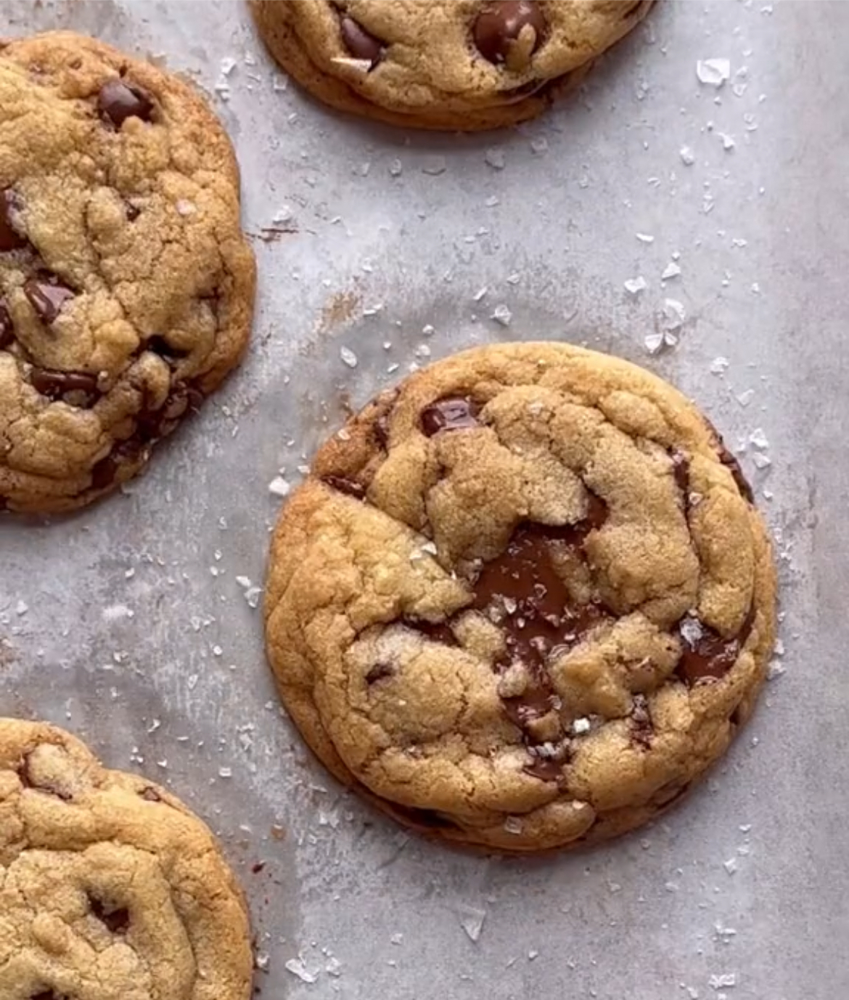

The first record of the chocolate chip recipe that we know and love to this day came in 1937 and made it's debut in Ruth Wakefield's restaurant 'The Tollhouse'. One year later, in 1938, Wakefield put the cookie in her cookbook, "Tried and True". The cookie became an instant sucess even showing up on Betty Crocker's radio show. In 1939 Wakefield sold her rights to the recipe to Nestle. She also sold the "Tollhouse" brand to Nestle, which is a brand you may recognize if you have ever bought pre-made cookie dough at the store. The actual creation of the cookie is not quite as interesting of a story. Ruth Wakefield but the Tollhouses repuation for having outstanding desserts. While we don't officially know where it came from it is likely that her creation came from a lot of testing and recipe development. Needless to say, the recipe was loved, so much so that in 1997 the chocolate chip cookie was designated the official cookie of the Commonwealth of Nations.
This chocolate chip cookie recipe is very similar to the one my great-grandmother used to make. She always used regular butter instead of browned butter but otherwise it brings me right back to coming into her house right after a fresh batch came out of the oven. Because she never left her recipe behind it took me a lot of trial and error to figure out, the key is not to use any liquid. The cookie is a buttery soft cookie that still gives that nice chewy texture even days after.

RELOAD PAGE TO SEE VIDEO
https://www.tiktok.com/@bromabakery/video/7238234014321118510
“The History of the Chocolate Chip Cookie.” The Sugar Association, www.sugar.org/blog/the-history-of-the-chocolate-chip-cookie/#:~:text=The%20original%20recipe%20was%20created,intended%20to%20accompany%20ice%20cream. Accessed 9 Oct. 2023.